Осторожно, спойлеры. Здесь разобраны серии 1–19 второй части и весь сюжет первой «Теней Сентфора», включая концовки.
Я дочитал(а) до серииВсё, что дальше, скрыто.
Люди
Нажми на человека, чтобы открыть досье: что о нём известно по сериям и с кем он связан.
Надин и Декс выглядят так, как в твоей игре. Её семья подстраивается под её внешность.
Из настоящего
Из прошлого
Газета «Тени Сентфора»
Школьная газета, которую делают Надин и Миранда. Новые выпуски открываются по сериям.
Прогнозы к обнове
Скорее всего, 22 ноября выйдут серии 20–23. Сделай ставки до субботы 21-го, 15:00 по Москве: после выхода серий проверим, кто угадал. Пока не нажмёшь «Подтвердить», ответы можно менять. Проценты других откроются после подтверждения.
Сначала дочитай до 19-й серии
Здесь спойлеры ко всему, что уже вышло. Выбери 19-ю серию вверху, и прогнозы откроются.
Доска улик
Твоя доска следователя. Прикрепляй героев, улики, скрины, стикеры и штампы, связывай нитками и строй свою версию. Доска открывается во весь экран.
То, что нельзя объяснить
Наведи на фото, чтобы прочитать, что известно. Нажми, чтобы открыть крупнее.Нажми на фото, чтобы узнать больше.
Здесь темно. Свети фонариком.
заражёнПарень из пролога
с.1 Один из тех, кого Говард отправил в зону. Кто он? Льюис Холт?
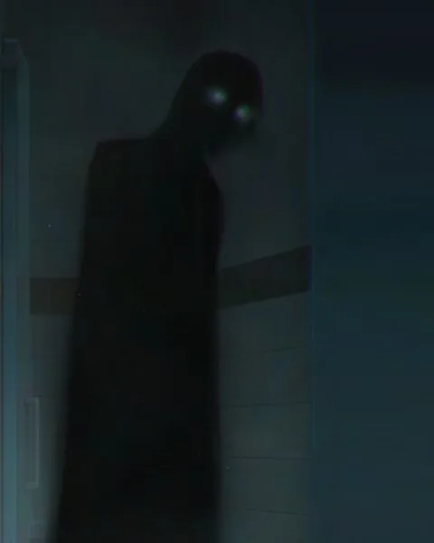
угрозаТень
с.1 Не та ли это тень, что преследует Миранду? Теперь её видит и Надин.
тень?Рисунок Миранды
с.2 Так Миранда нарисовала свою тревогу. Та же фигура с белыми глазами, что стояла в кабинке.
не она?Миранда в дверях
с.2 Из дома тянет едким сладким запахом. Лицо меняется на глазах. Это ещё Миранда?
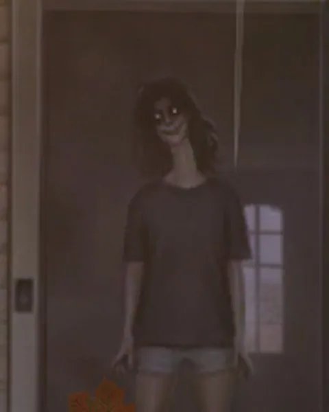
не она?На крыльце
с.2 Стоит в проёме под дождём и не двигается. Чего она ждёт?
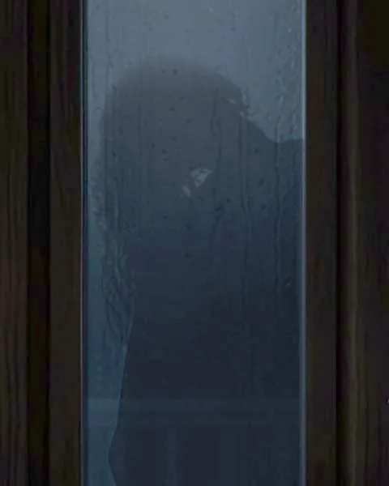
Силуэт за дверью
с.2 Миранды больше нет… Но кто стоит за стеклом?
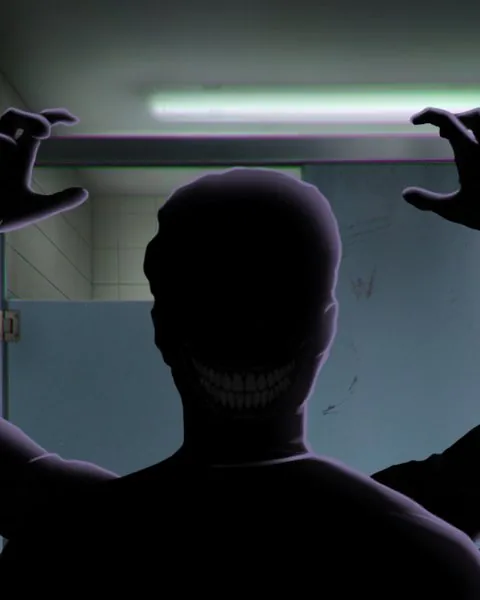
угрозаНечто (путь смелости)
с.3 «У меня двенадцать рук… Кто-то скоро всех убьёт». Он предупреждает… или говорит о себе?
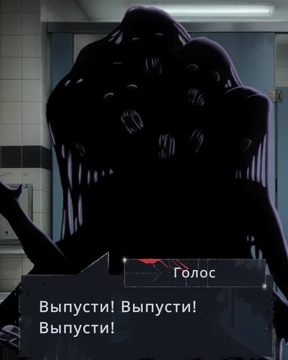
угрозаНечто (путь осторожности)
с.3 «Ты да я. Я да ты… Мы с тобой срастёмся кожей». А потом просит выпустить.
кто?Фото от Неизвестного
с.4 Надин со спины, снято прямо сейчас. Коридор пуст… Кто держал телефон?
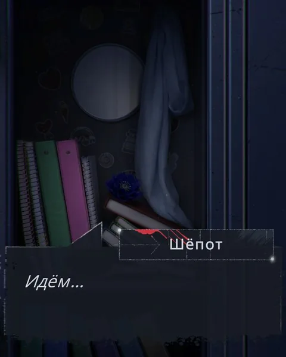
Зовущий голос
с.4с.4–5 Шепчет у шкафчика Миранды. Зовёт… но куда?
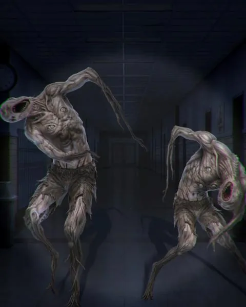
угрозаДвое с корнями
с.4 Вместо рук и ног корни. Те же, что проросли через парня из пролога?
Тень за Мирандой
с.5 Глазами никто ничего не видел. Но плёнка запомнила, кто стоял за Мирандой.
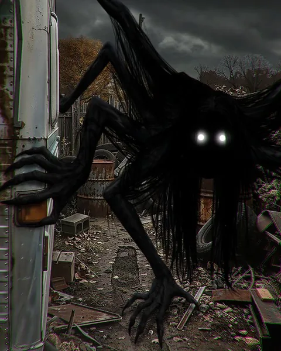
угрозаТень на свалке
с.5 Пахнет сладко, как морозник. Элис рядом и ничего не видит. Та же, что на фото за Мирандой?Как раз там, где потом нашли Тома.
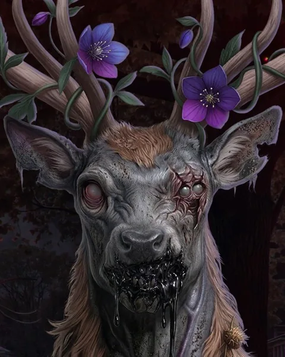
заражёнОлень
с.6 Что он делает в городе, а не в Старом Сентфоре?
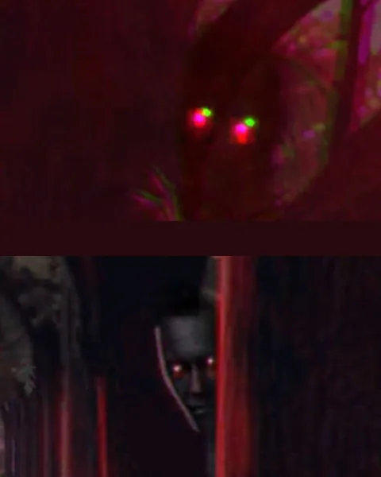
Кто-то в деревьях
с.6 Надин их не заметила. Кто это? И давно они там?
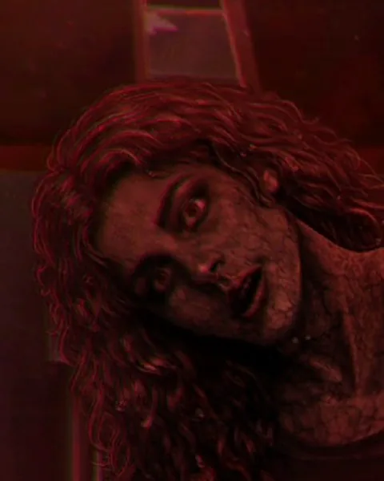
Миранда
с.6 «Он тебя ищет».
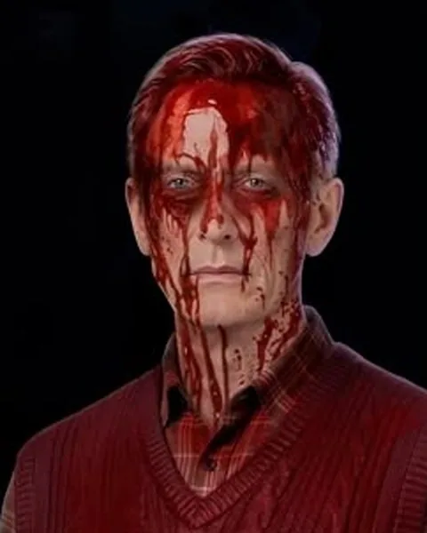
Сторож
с.6 «Хотели, чтобы я вышел поиграть?»
Зеркало в подвале
с.9 По стеклу сверху ползут чьи-то чёрные волосы, которые пахнут клубникой.
сон?Мама у лестницы
с.10 Стоит и молча скалится.
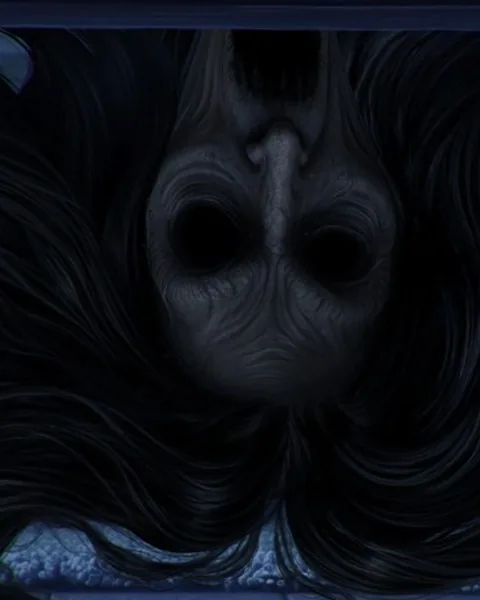
сон?Под кроватью
с.10 «Диспетчер» 112 велит спрятаться под кровать. А там уже кто-то есть.
угрозаЖенщина у ворот
с.11 Повторяет слова из сна Надин. Пахнет нафталином. Поппи её не видела.
с.16 В 1986 году бродит по Сентфору. Заманила Надин к люку с кипятком: «Здесь тебе быть нельзя. Ты чужачка. Он мне сказал». Родных у неё нет, бродит по городу не первый год.
угрозаОбъект
с.11 То, что за кадром снимка со свалки. Сдирает с кого-то лицо. На виске дыра от пули. «Нужен жирный, осязаемый контур… ЖРАТЬ». Старики и взрослые ему не годятся, «в них не осталось тепла». А «добыча близко, но трогать её — смерть». Это Том?
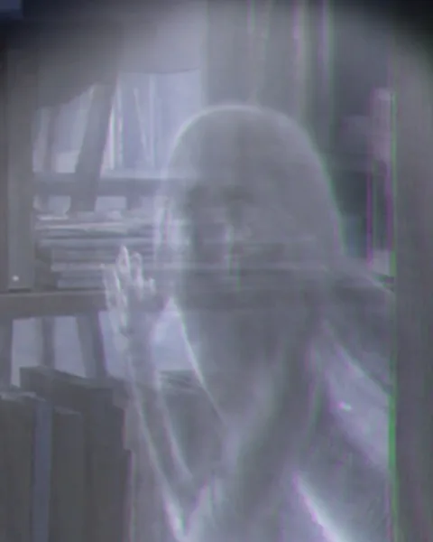
Призрак в библиотеке
с.12 Сидит у полок в библиотеке. Детский шёпот слышала и Элис.
с.12 Голос оказался розыгрышем Поппи: «Услышала твою милую детскую байку. Не смогла удержаться». Но голос объясняет только шёпот. Девочку у полок видела одна Надин, Элис её не разглядела. Может, её дорисовало воображение после листовки с пропавшей девочкой. Розыгрыш или нет?
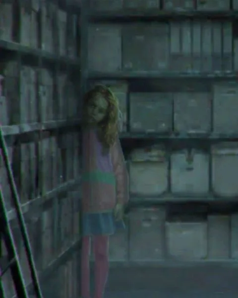
Девочка в архиве
с.12 Стоит в проходе, на полу мячик. Элис её не видит. Это девочка с листовки?
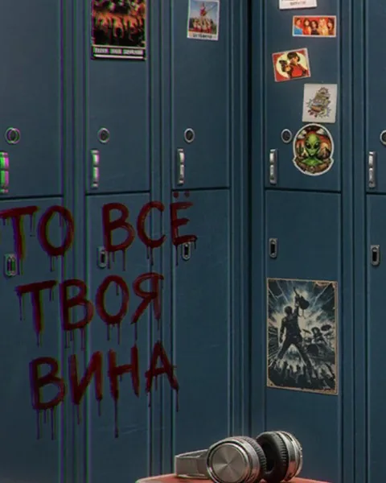
«Это всё твоя вина»
с.13 Кровью на шкафчике.
угрозаДети в темноте
с.13«В чёрный, цепкий, дикий лес, Где во тьме таится бес… Мальчик вышел погулять… Бесполезно его звать!»
угроза«Поппи»
с.13 «Всегда была здесь. У тебя за спиной». Настоящая Поппи ничего не видела.
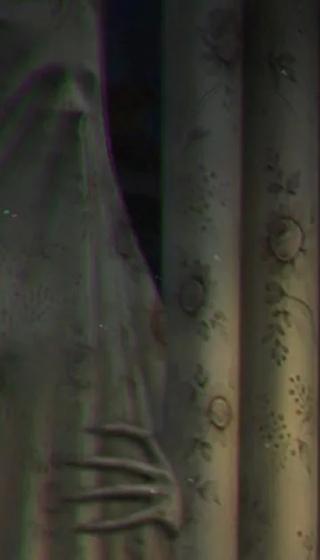
За шторой
с.14 Кто-то стоит за шторой и двигается вместе с Надин.
Снимок роллердрома
с.14 Площадка была пустой. На фото — руки и череп.
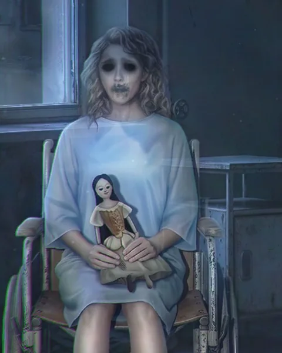
Девочка в коляске
с.15 В больнице Старого Сентфора. «Они говорят, ты сумасшедшая… Как и я». Это Кэнди.
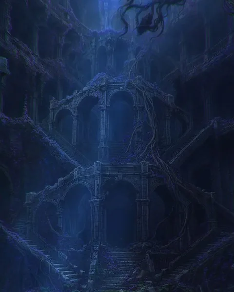
Башня изнутри
с.15 Лестница уходит прямо в небо, вокруг десятки дверей. Одна из них привела Надин в 1986 год.
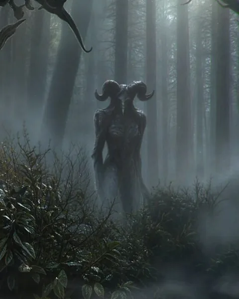
Статуя в лесу
с.16 В лесу 1986 года. Деревянная, с рогами, тело в древних узорах. Фавн.
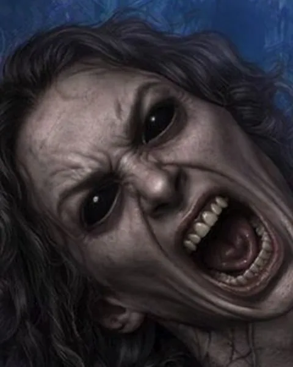
угроза«Малкольм» в башне
с.16 «Выпусти». «Я голоден».
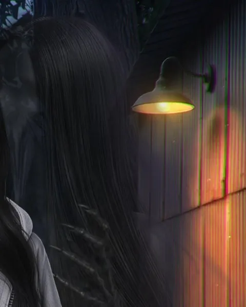
угрозаГолос в голове
с.17 Стоит за спиной и подталкивает Надин наложить на себя руки.
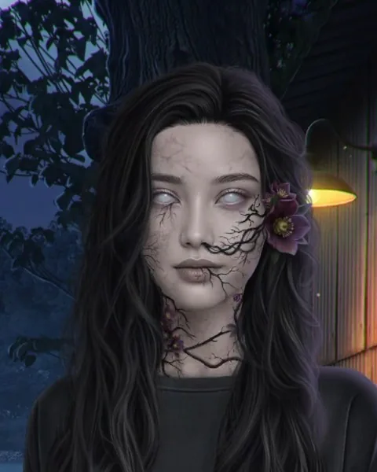
Мёртвая Надин
с.17 Надин видит себя мёртвой, проросшей морозником.
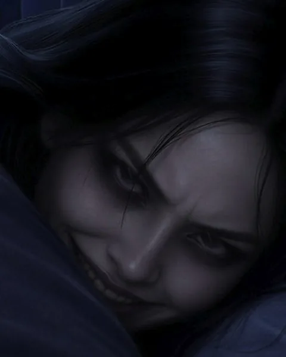
угрозаКто-то в кровати
с.18 «Тебе не нравится со мной спать?» Утром под подушкой цветы морозника.
угрозаВены в комнате (42 осторожности)
с.18 Поппи ночует у Надин, а стены и кровать оплетают вены.
угрозаСущество на потолке (42 осторожности)
с.18 В коридоре на потолке сидит существо с жёлтыми глазами. Кто это?
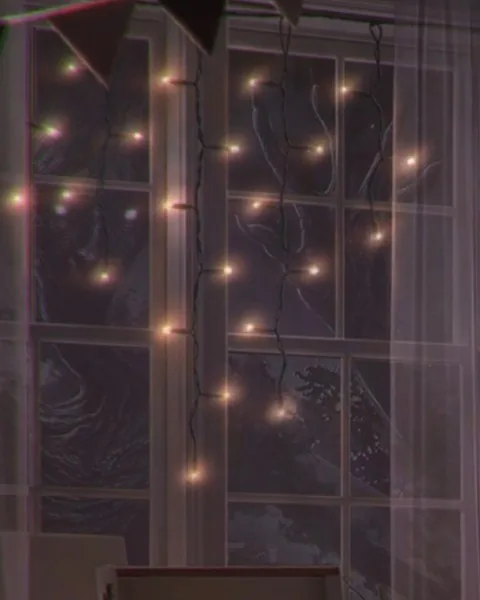
угроза«К-кто это?»
с.19 Это увидел Джимми. Щелчок плёночной камеры Элис его отогнал. Не только Надин.
Улики
Наведи на фото, чтобы прочитать, что известно. Нажми, чтобы открыть крупнее.Нажми на фото, чтобы узнать больше.
Из настоящего
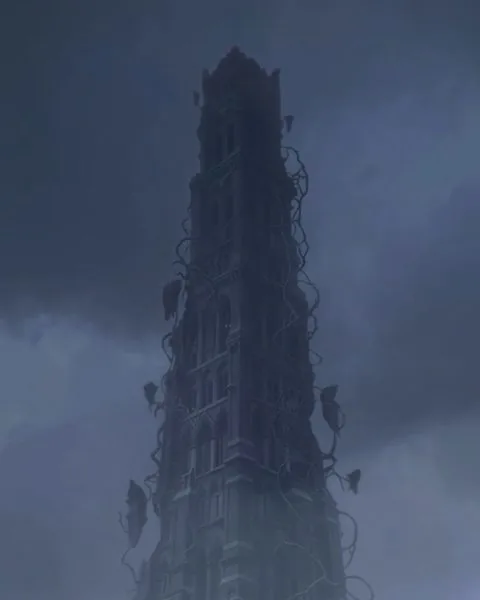
аномалияБашня в Мёртвой зоне
с.1 Вокруг башни аномалия магнитного поля, приборы сбоят. Один из отправленных в зону вошёл внутрь.
пропалДело Малкольма
с.1 Папка у шерифа. Пропавший, предположительно из Сов. Не первый случай.
видеоВидео от Поппи
с.2 Миранда на записи напугана. Чего она боялась?
Камера VZ1
с.3 Лежала на полу в комнате Миранды. Мох, паутина, еловые иглы. Похоже, её принесли из Старого Сентфора.
стёрта«Сентябрь, 2017. Ш.М.Б.»
с.3с.3–4Нашлась в камере Миранды. На записи башня, люди с автоматами и женский крик.Запись стёрлась, фото башни осталось у Надин в телефоне.
с.19 Даррен забрал её у Надин и спрятал в старом лагере.
украденоНевозможная башня
с.3с.3–4Та самая башня из пролога, только на записи 2017 года. Выходит, она стоит там уже давно.Папа: такое не построить.
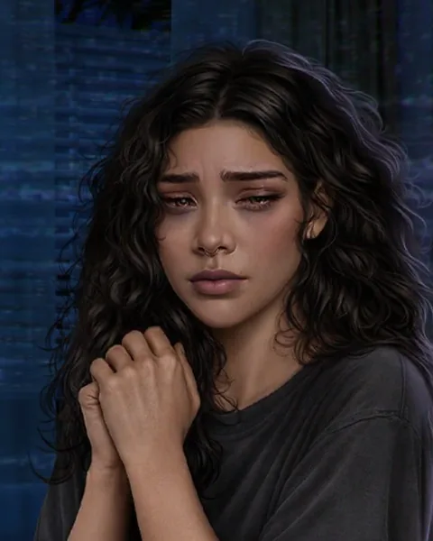
украденоКассеты с Мирандой
с.4 Пропали из редакции вместе с распечаткой башни.
следятСерый седан
с.4 Сначала стоял у дома Миранды, потом у дома Надин.
Чёрный морозник
с.4 В закрытом шкафчике Миранды. Как он туда попал?
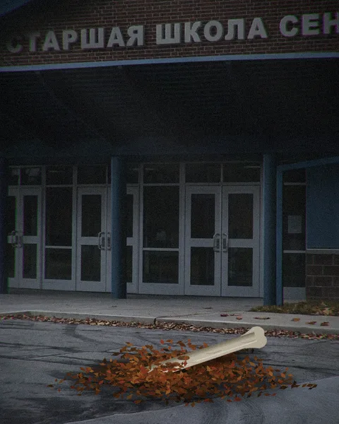
выброшенаКость у школы
с.5 Нашлась в листве у самой школы. Для кошки или собаки слишком большая… А её просто выбросили в мусор.
теньПоследний день Миранды
с.5 Рядом с Мирандой никого не было, а плёнка запомнила тень. Что ещё видит камера?
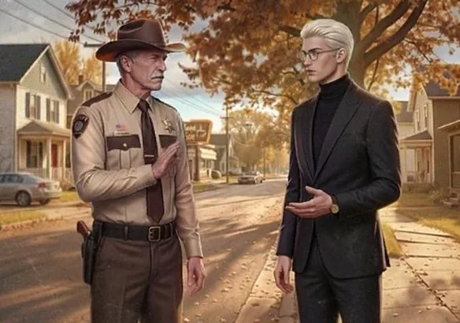
Шериф + Говард
с.5 Шериф и Говард тайком встречаются у свалки и о чём-то спорят. Что их связывает?
📖
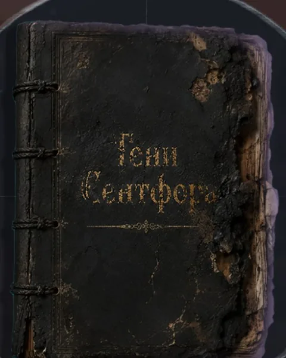
пожарКнига «Тени Сентфора»
с.5 Городские легенды. Пережила пожар, части страниц нет. Подарок библиотекарши маленькой Надин. Связь с ТС1 →
с.19 В ней нашлась расшифровка знаков с таблички в башне. Надин помнила их с детства.
?
тайназакопаноНаходка Поппи
с.6 Поппи обыскивает брошенные машины на свалке. Что-то нашла и хочет продать.
с.10 Ничего не нашла: сама снимала из брошенных машин. На записи выстрел, потом люди в пиджаках закапывают тело и только после этого ставят оборудование. Запись закопала в лесу, копия у неё в телефоне.
зашкалилИзмеритель поля
с.8 У могилы Тома загорелись все индикаторы.
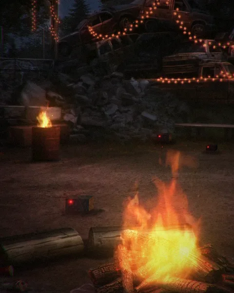
спрятаноАппаратура на свалке
с.8 Неприметные железки с красным огоньком. Не одна.
подкинулиКассета на подоконнике
с.9 Подкинули на подоконник. «Здесь всё, о чём ты должна знать».
с.10 «В опасности… запомни… Дату над дверью… вырезать. И тогда… в нужное время… Не зли… Кукла… Изменения зашли слишком далеко… их не спасти». Джимми: похоже на голос Надин.
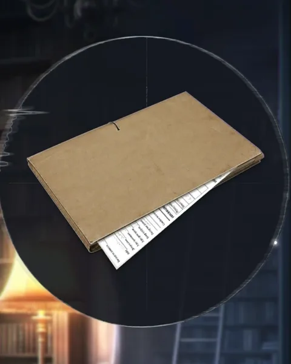
в доме ГовардаотобралАнкеты «объектов»
с.11 Анкеты на людей и существ. «Родственное магнитное поле с Объектом 1. Общая геомагнитная аномалия». «Для изучения опасен». Режим бесконтактного мониторинга.
с.11 От руки: не отходит далеко от жертвы, преследует, выжидает. «Кого-то ищет или хочет насытиться? Жертвы случайны?»
в доме ГовардаСнимок со свалки
с.11 Сделан приборами «Уорлока». На первом снимке пусто, на втором чёрная клякса.
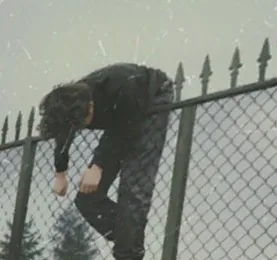
закрытоДело Стива
с.12 Стив Бейли, 22 года. Напоролся на пики забора на границе Старого и Нового Сентфора, в лесной зоне. Списали на несчастный случай и закрыли дело.
с.18 Сестра подтвердила: он погиб на границе, а не в самом Старом Сентфоре.
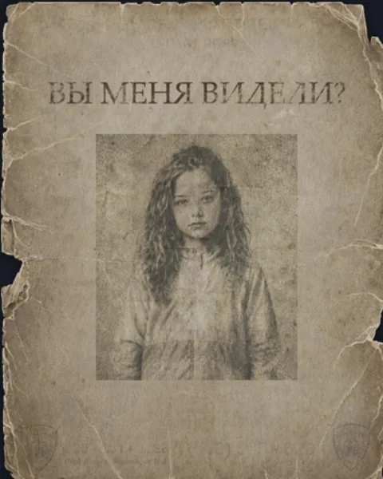
пропала«Вы меня видели?»
с.12 Листовка на полу архива.
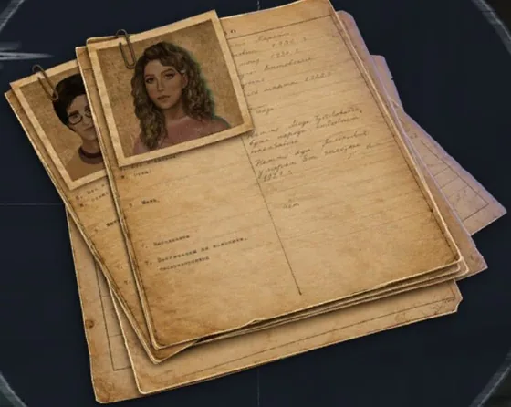
1986Дела 1986 года
с.13 Кэнди Нельсон пропала и сама вернулась с болота. Говорила, что её держали силой, описывала странное существо. Всё списали на морозник, подозревали отчима.
с.13 Пропал Бобби Тёрнер. В ту же неделю пропали Меган Уайт и Фредди Браун, позже их нашли живыми вместе с другими детьми. Дети говорили, что их кто-то похитил.
с.13 В лесу нашли мёртвым школьника Сэма Фостера, в крови CP-25. Элис: «И это только официальные данные».
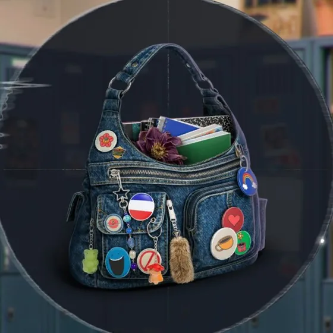
морозникСумка Миранды
с.13 Лежит в раздевалке, никто не убрал и не искал. Внутри гнилой морозник.
лицо стёртоФото в доме
с.14 Лицо мужчины исцарапано. Рядом открытка «С днём рождения, Сара…»
с.16 В 1986 году в этом доме живёт Сара О'Нил.
из прошлогоКлюч
с.14 На брелоке руна, которая по городским легендам отгоняет зло.
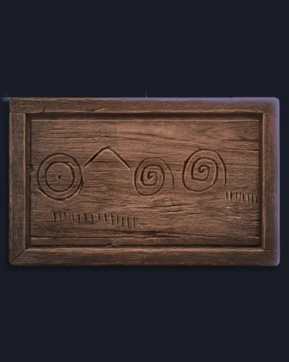
знакиТабличка в башне
с.16 Над выходом. Круг в круге, изогнутая линия, спирали и счётные палочки.
с.19 Расшифровали по книге: две спирали — два тысячелетия, 23 зарубки — годы, Солнце с Луной — равноденствие. Это 23 сентября 2023, ночь вылазки, когда Надин вышла из башни.
с.19 Расшифровали по книге: две спирали — два тысячелетия, 23 зарубки — годы, Солнце с Луной — равноденствие. Это 23 сентября 2023, ночь вылазки, когда Надин вышла из башни.
Из прошлого
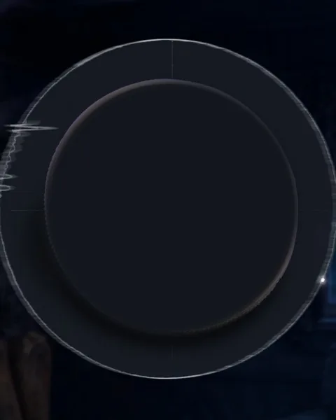
Монета
с.8 Декс нашёл в заброшенном доме. Принадлежала «Чёрным Драконам», старой сентфорской банде.
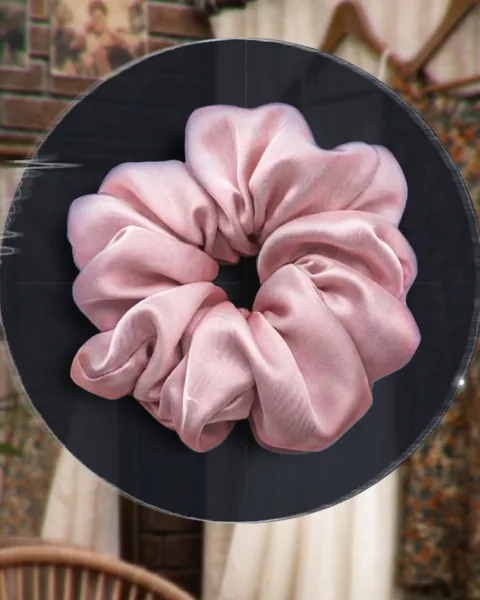
Резинка
с.9 Элис отдала её Надин в примерочной комиссионки.
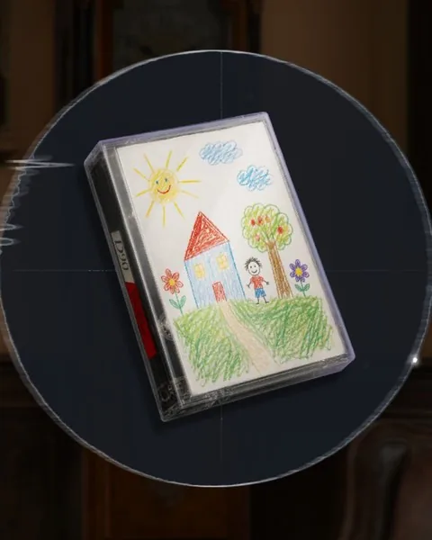
из 1986Кассета с рисунком
с.16 Миссис Хилл отдала Надин в прошлом.
из 1986Мятная конфета
с.16 Тоже от миссис Хилл.
Теории
🔒 Теории доступны после прочтения всех 19 серий: в них спойлеры до самого конца.
автор сайта
Сидни заперта, и выхода правда нет
Я пересмотрела все посты Сидни, фото и видео. Если сложить их по порядку, получается история: Сидни раскопала правду об «Уорлоке», её заманили и заперли, а Тень постепенно забирает её себе. Её «ПОМОГИТЕ. ВЫХОДА НЕТ.» надо понимать буквально.
Она узнала правду об «Уорлоке». Официально корпорация изучает морозник ради медицины: о её достижениях в медицине Говард и хотел говорить в интервью в 1.01. А Сидни ровно в 18:06 пишет, что всё, что нам рассказывали о прогрессе, — ложь, прикрывающая настоящий ад, и что весь город — это не город. До этого она нашла в заброшке анкеты пропавших подростков с пометками «непригоден» и «переехал». Похоже, город — полигон корпорации, а подростки — подопытные.
Сидни Уитли ✍🏽12 марта, 18:06
Я НАШЛА ЭТО. Боже, если я выберусь и опубликую всё… Это будет самая большая сенсация в истории журналистики. Весь город — это не город, это...
Я не могу здесь писать детали. Скажу только одно: всё, что нам рассказывали о прогрессе, — ложь, прикрывающая настоящий ад. Это будет мой триумф.
Нашла подсобку в заброшенном здании. Весь пол завален личными делами. Это не документы, а школьные анкеты. Посмотрите на эти даты. Десятки подростков. Официально они числятся «переселенцами» или «пропавшими без вести». Но почему их фотографии здесь, в архивах корпорации, с пометками «непригоден», переехал и «**2»?
Она дошла до Мёртвой зоны. На снимках вышка в тумане, ржавая машина, противогаз с черепом и кости в брошенном доме. Она была рядом с Башней и знает о ней больше, чем пишет.
Сидни Уитли ✍🏽12 марта, 23:06
Меня привлекло сообщение от жителя данной территории.
Территория смерти — самая верная трактовка этой аббревиатуры. Тут всё пропитано смертью. Кругом кости, оставленные вещи…
Кажется, что это место медленно поглощает всё живое. Даже тишина здесь какая-то неправильная... тяжёлая, давящая... понимаете?
Её заманили. Пост из Мёртвой зоны начинается с «сообщения от жителя». До него все её находки лежат на бетонном полу под фонариком: она ещё ходит по заброшке. После — всё лежит на одном деревянном столе с лампой и магнитофоном. Похоже, сообщение было приманкой.
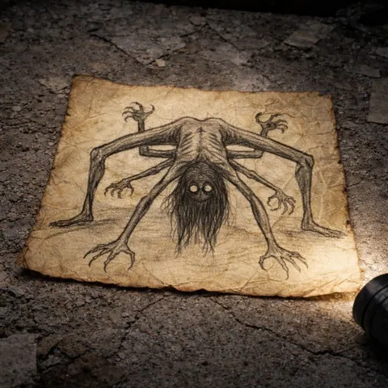
ТГ Сидни, 11 марта
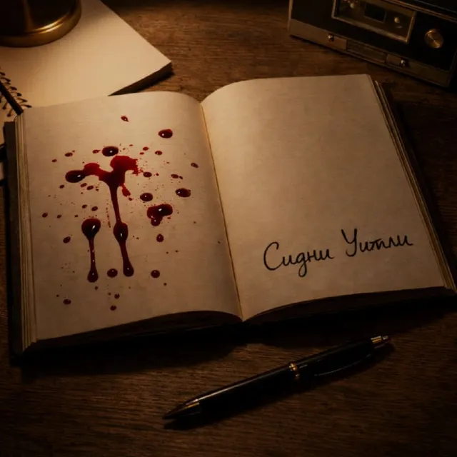
ТГ Сидни, 14 марта
Её заперли. Окно с деревьями и дверь на фото просто нарисованы на стене, под окном даже видны потёки краски. В углу гора пустых банок: сидит она там давно. 18 марта она пишет, что может уйти в любой момент, а 19 ноября присылает смазанное фото той же комнаты и пост азбукой Морзе: «ПОМОГИТЕ. ВЫХОДА НЕТ.»
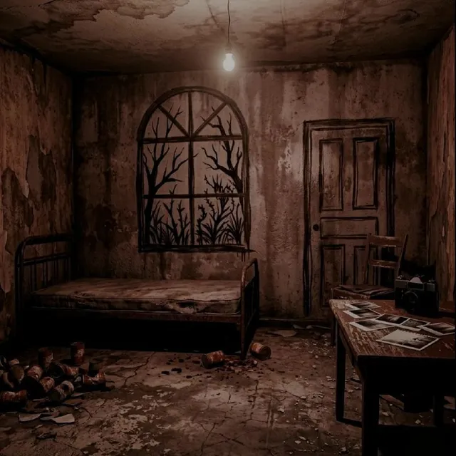
Сидни Уитли ✍🏽18 марта, 19:06
Здесь так спокойно и безопасно. У меня есть всё, что нужно: удобная кровать, любимая камера и окно с прекрасным видом. Я могу уйти в любой момент, если захочу. Но пока... пока мне здесь слишком хорошо ❤️
Тень забирает её. Сначала Сидни видит человека без лица, слышит гул и боится. Потом гул прекращается, и она сама рисует то же, что дети из заброшки, на такой же обгоревшей бумаге. Отражение в витрине поворачивает голову само, не вместе с ней, — как Тень в Малкольме, а потом в Надин. И действует Тень так же, как на Надин: Сидни «тянет туда постоянно», как Надин в 1.18 дважды «на автомате» тянет к Башне. Ей то «слишком хорошо», то «больше не могу», а в голове «слишком много „других“ голосов».
Сидни Уитли ✍🏽13 марта, 19:06
Гул прекратился. Теперь я понимаю. Чёрная тень — это не враг.
Я тоже рисую теперь. Так гораздо понятнее, чем слова. Слова не правдивы. Глаза... повсюду должны быть глаза, чтобы видеть, как они приходят. 👁️ Спите спокойно, горожане. За вами уже присмотрели 🌺
Даже цифры в её голове — Сентфор. Она их не понимает, но вырезает на столе с таким остервенением, что на дереве осталась кровь. Если заменить числа буквами по номеру в русском алфавите (считая Ё), получится СЕНТФОР.
19061520221618
190109142006142017
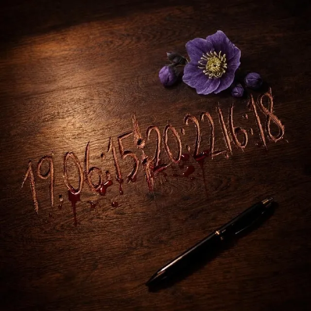
Сидни Уитли ✍🏽20 марта, 18:00
Всё смешалось... Дни, ночи, запах… Не уверена, что помню, где я. Это комната в доме? Или всё это время я была в лесу? Мысли... они не мои. Слишком громкие. Другие. Слишком много «других» голосов. В голове цифры. Я не понимаю, что они значат. Как они могут помочь?
Чувствую, что-то грядёт. Нечто очень... ужасное. Я... я не могу больше сидеть здесь и ждать. Больше не могу.
Настоящая Сидни пробивается. Пост азбукой Морзе — первый раз за долгое время, когда она пишет сама. Прямо, видимо, не может. Вечером 19 ноября, с 22:10 до 22:20 по Москве, она пишет в комментариях фанатских каналов: «Вы меня видите?», а потом по кусочку одно слово — «пом…», «..ог..», «…ите». В 22:49 в чате нашего канала отвечает на пост азбукой Морзе стикером 🆘, а в 22:54 в другом чате ставит 😶 — лицо без рта. На «Хм… раньше ей там нравилось» отвечает 🤕: голова, голоса, а 1.17 так и называется — «Голоса в моей голове». Позже в своём канале: «Видите???»
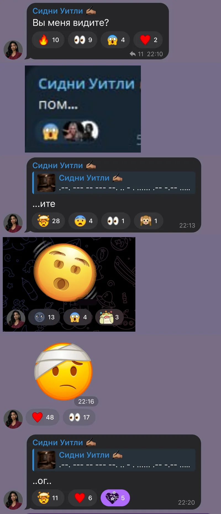
Комментарии Сидни, 19 ноябряКомментарии Сидни, 19 ноября
На следующий день — «всё в порядке». 20 ноября Сидни пишет: «Простите за вчерашнее. Наверное, переутомилась, вот и мерещится всякое». Но на фото её тетрадь, исписанная до дыр: «Я здесь», «Не сплю», «Нормально», «Я умерла?» и десятки «Не могу», зачёркнутых и написанных заново. В посте она «просто не высыпается», а в тетради — «не сплю». Пост будто пишет за неё Тень, а в тетради прорывается сама Сидни.
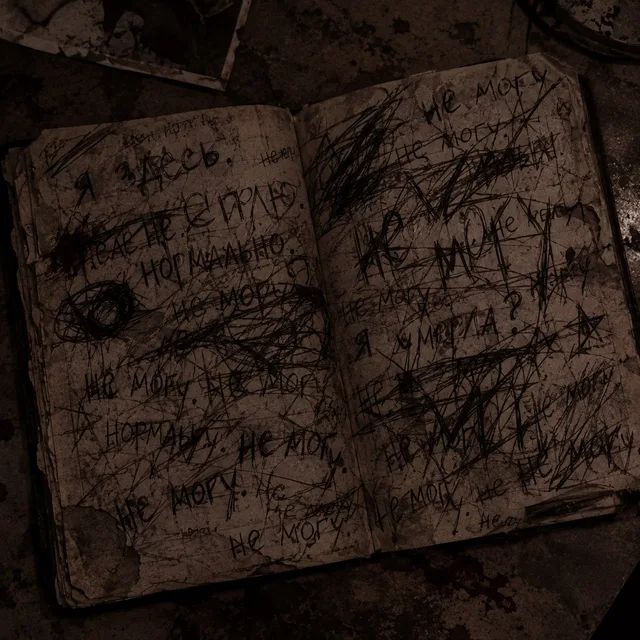
Сидни Уитли ✍🏽20 ноября, 19:19
Простите за вчерашнее. Наверное, переутомилась, вот и мерещится всякое. Я в порядке, правда. Просто… не высыпаюсь.
Вывод. Сидни раскопала, что «Уорлок» ставит опыты на городе, и её убрали: заманили и заперли в комнате с нарисованным окном. Теперь в ней Тень — та же, что в Малкольме и Надин. Сидни говорит её словами, а сама прорывается только шифром и смайликами. Её никто не видит, как Надин не видит Неизвестного в 1.04: может, она застряла там же, вне времени. Она и сама уже не уверена, жива ли.
Надин из будущего ведёт себя сама
Самая красивая версия ТС2: Надин не одна, потому что рядом всё время она сама, только из будущего. И подсказки себе оставляет тоже она.
Фото со спины. В 1.04 Надин одна в пустом коридоре, и ей приходит её же фото со спины, снятое секунду назад. Тот, кто снимал, стоит в паре шагов, но Надин никого не видит. Дальше игра впервые даёт сыграть за Неизвестного. Если сделать ещё один снимок, в кадр попадает его рука, и цвет кожи совпадает с внешностью, которую игрок выбрал для Надин.
Неизвестный ведёт её к открытому шкафчику Миранды, где лежит морозник. Увидев цветок, Надин сразу понимает, откуда её видения: так же было с дедушкой.
ТС2, 1.04ТС2, 1.04
Почему она себя не видит. Позже Надин увидит даже призрак Миранды, а здесь — пустоту. Похоже, две версии одного человека просто не могут встретиться. Увидь Надин саму себя, она бы испугалась, не пошла к шкафчику, и всё, что случилось потом, не случилось бы.
Кассета. В 1.09 Надин высовывается в окно и нащупывает на подоконнике кассету. Подбросили только что: она ещё не успела намокнуть. На кассете обрывки фраз: «Дату над дверью… вырезать», «Не зли… Кукла…». Чей голос, Надин разобрать не может. А Джимми слышит сразу: это её голос.
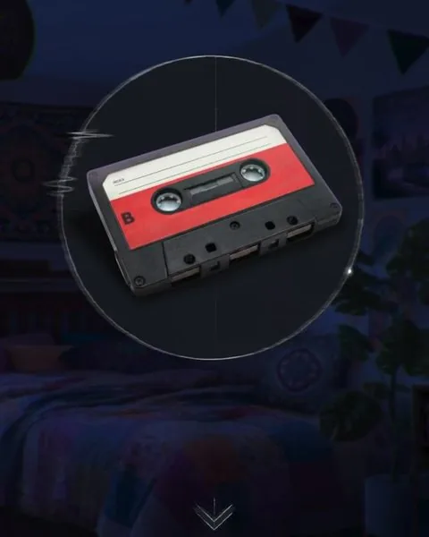
ТС2, 1.09ТС2, 1.09
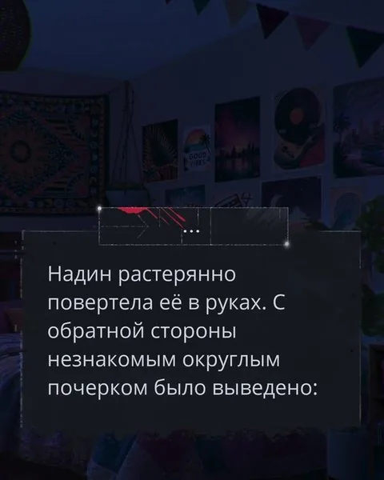
ТС2, 1.09
Подпись на обороте сделана «незнакомым округлым почерком». Может, кассету подписывал кто-то другой. А может, Надин из будущего изменилась сильнее, чем можно представить.
Дата над дверью. В 19-й выясняется, что знаки над выходом из башни — это дата. Кассета просила её вырезать, и кто-то уже это сделал. Надин сама гадает: «кто-то был в башне до меня?»
Морозник под подушкой. В 1.18 Надин дважды за день ходит «на автомате», и из памяти выпадают целые куски. А утром под подушкой лежит морозник. Может, цветы она подкладывает себе сама, чтобы снова попасть туда, куда нужно.
ТС2, 1.16ТС2, 1.18
Ранняя версия: это было видение. До 16-й серии казалось, что 1986-й Надин просто привиделся. Гул, писк прибора Даррена, нестерпимая боль, а потом всё как во сне, задом наперёд. Но Надин вернулась с кассетой, мятной конфетой и в чужой одежде. Значит, она правда там была.
ТС2, 1.16ТС2, 1.16
+ рука Неизвестного меняет цвет вместе с внешностью Надин.
+ Джимми узнаёт на кассете голос сестры.
+ одна из серий называется «Гостья из будущего».
Как устроено время: линии, миры и «Тьма»
Мнимое время. Это понятие звучит ещё в 1.01 на уроке, а объясняет его Даррен в 1.18. Мнимое время, по его словам, используют как удобный расчётный трюк, но это не значит, что оно не может существовать. «Мы привыкли думать, что время — прямая линия. Но физика допускает, что наша прямая — лишь одна из осей». Башня, считает он, преобразует время: шагнув за дверь, Надин выбрала иное направление и «соскользнула с прямой». «Для тебя это выглядит как путешествие в прошлое, хотя на самом деле ты просто вошла в другую точку той же структуры».
Одновременность. Игра и правда раз за разом это показывает. В 1.05 Надин на свалке говорит «Всё будет хорошо», и сразу за ней ту же фразу произносит Надин в Старом Сентфоре. В 1.15 сцена повторяется слово в слово. Будто обе происходят одновременно.
Знак в лавке. В 1.16 на стене у миссис Хилл висит деревянное блюдо: три сплетённые петли и цветок в середине. Это знак из сериала «Тьма», где три времени связаны в одну петлю. Только здесь в центре цветок, а в Сентфоре ключ ко времени — морозник.
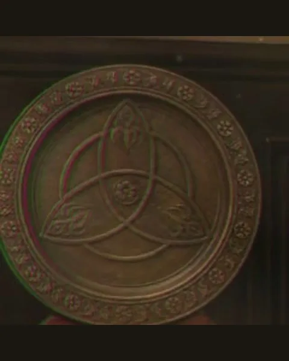
ТС2, 1.16ТС2, 1.05
Как именно это работает, есть две версии.
Одна линия, много дверей. Прошлое, настоящее и будущее лежат на одной линии, а двери в башне ведут в важные даты: 1986, 1996 и дальше. Будущее влияет на прошлое так же, как прошлое на будущее. Тогда кто-то из будущего мог вмешаться в 1986-й, и Сара в этой линии зло так и не победила.
Два зеркальных мира. Мир Сары и мир Надин. Люди в них одни и те же, а события наоборот. У Сары Писадейру упокоили, Джона остановили, Человек в маске ушёл. У Надин не было ничего из этого. Башня — мост между мирами, и спастись оба могут, только если будут передавать друг другу то, что знают. В «Тьме» оба мира родились из третьего, сломанного.
Нулевой километр. В ТС2 есть кадр, где четвёрка Сары стоит каменными статуями, заросшими морозником. Возможно, это и есть точка, где время сломалось.
ТС1ТС2, 1.16
Выборы из ТС1. Сценаристка Анна официально подтвердила, что выборы из ТС1 будут учитываться. Значит, разница между мирами не в том, что студия выбрала плохую концовку, а в самом сюжете.
+ ТС2, 1.16: знак из «Тьмы» прямо в лавке миссис Хилл.
+ ТС2, 1.05 и 1.15: одна и та же фраза в двух временах.
+ выборы ТС1 официально учитываются.
− пока неясно, ходит ли через башню кто-то, кроме Надин.
Откуда видения и тени на плёнке
Началось с Миранды. В 1.01 Надин видит тень у неё за спиной, потом силуэт в школьном туалете. Дома у Миранды пахнет чем-то сладким и едким. Дальше хуже: олень в переулке, паукообразное существо у грузовика на свалке. И каждый раз рядом оказываются фиолетовые цветы.
ТС2, 1.01ТС2, 1.05ТС2, 1.06
Пыльца. Миранда была в Старом Сентфоре, у самой аномалии. Морозник лежал у неё в шкафчике, пыльца осела на одежде и вещах, а Надин потом трогала её кассеты и камеру. В ТС1 сок этого цветка — основа «Си-пи-25», и Саре хватило лёгкого касания, чтобы видеть кошмары целый сезон. Морозник там ещё и проводник в Мир грёз.
Но не всё — видения. Тень за Мирандой проявилась на плёнке Элис в 1.05, а плёнку видят все. Объяснений три.
Брак. Элис снимает на плёнку и проявляет вручную, говорит «может, передержали» и одёргивает Надин: «Осторожно, пока не шевели». В XIX веке из-за таких ошибок появлялись «снимки призраков».
Поле. Даррен считает, что поле объекта даёт свет, которого не видит глаз, но видит плёнка.
Кто-то правда ходит. Самое простое объяснение: за девочками действительно кто-то ходит.
ТС2, 1.05ТС2, 1.02
Это видят все. В 1.15 в больнице Сову оплетают лианы морозника, и это происходит на глазах у всех ребят, а не только у Надин.
ТС2, 1.15ТС2, 1.15
А в 1.19 плёнка молчит. Надин сидит у себя в комнате и боковым зрением ловит тёмный силуэт, который скользнул ей за спину. Элис смотрит на неё не моргая, будто о чём-то догадалась, достаёт камеру: «Не двигайся». В миг перед щелчком Надин накрывает тошнотворная волна, а сразу после становится очень легко. Снимок выскакивает и проявляется, но Элис только хмыкает: «Ничего не вижу». И тут в дверях замирает Джимми и в ужасе смотрит прямо перед собой.
ТС2, 1.19ТС2, 1.19ТС2, 1.19
В 1.05 тень за Мирандой проявилась на плёнке, а в 1.19 тень за Надин на снимок не попала, хотя Надин её чувствует, а Джимми видит. Может, новая тень плёнке не показывается. А может, щелчок её просто спугнул, и на снимке уже было пусто.
+ видения начинаются рядом с Мирандой и её вещами.
+ ТС1: малой дозы цветка хватило Саре на целый сезон кошмаров.
+ то же, что видит Надин, видит и плёнка, и Элис.
− Элис сама допускает, что снимок просто передержали.
− ТС2, 1.19: на снимке Надин тени нет, хотя Джимми её видит.
Фавна не победили
Кто такой Фавн. По легенде ТС1 фавны пришли из Мира грёз. Они давали людям урожай и здоровье, а взамен забирали детей. Люди перебили их стрелами с хрустальными наконечниками, но один выжил и затаился. Джон, он же Вильям, веками крал детей, чтобы ритуалом с хрустальной иглой вернуть его. И Фавн живёт за чужой счёт: «ещё шестьдесят пять лет».
ТС1, 2.08ТС1, 2.07ТС1, 2.07
Дата. Сара с друзьями победила Фавна в 1986-м, за неделю до Хеллоуина. А в 1.15 Надин попадает в 1986-й за несколько дней до Хеллоуина. Ровно в ту самую неделю.
Что всплывает в ТС2. В лесу 1986-го стоит деревянная статуя с рогами. Дети-тени в 1.13 поют считалку «Мальчик вышел погулять… бесполезно его звать». В ТС1 детская песенка тоже была приманкой: призрак Сэма говорит, что её «напел тот, кто со мной это сделал».
ТС2, 1.16ТС2, 1.13ТС1, 1.07
Спящая четвёрка. В ТС1 Джон признаётся: «Фиолетовые цветы усыпляли меня, держали в анабиозе». Похищенных детей клали в кольцо углублений с цветами. А в ТС2 есть кадр, где Сара, Кэнди, Бобби и Дерек стоят каменными статуями, заросшими морозником. Может, это не памятник. Может, в этой линии их просто усыпили.
Если битву проиграли, проклятие Сентфора не снято, и Фавн может оказаться главным злодеем ТС2, а не Говард.
ТС2ТС1, 2.08
+ Надин попадает в 1986-й ровно в неделю битвы.
+ ТС2, 1.16: рогатая статуя в лесу 1986-го.
+ ТС1, 2.07: цветы держат людей в анабиозе.
− «Он вернулся» в ТС1 говорит Дерек, и это о Человеке в маске, а не о Фавне.
Писадейра в Сентфоре
Кто она. В ТС1 это Эйра Писада. Когда-то она спрятала младенца в колодце, убегая от погони, и так и не нашла его. Плач стал смехом, а Эйра — проклятием. Она вселяется в матерей, подражает чужим голосам, приходит к спящим. Её кукла как будто «выбирает» хозяйку.
ТС1, 1.10ТС1, 1.05
Мама Надин. У мамы с 4-й серии постоянные мигрени. В 1.10 Надин просыпается ночью и видит, что мама стоит у лестницы и улыбается чужой, хищной улыбкой. Надин звонит в 112, и «оператор» велит спрятаться под кровать. Но он знает её имя и при этом ни разу не спросил адрес. Под кроватью ждёт существо с длинными руками, а потом Надин просыпается: «Сон…».
ТС2, 1.10ТС2, 1.10ТС2, 1.10
Сон или нет. Многие уверены, что это просто сон и ничего этого на самом деле не было. Но в ТС1 Сара видела правду именно во сне, через ловец снов миссис Хилл. И чужой голос по телефону — ровно то, что умела Писадейра. Как и тень, которая в 1.13 говорит голосом Поппи.
Кукла. В ТС1 кукла сама выбирает хозяйку. В 1.02 в лавке миссис Хилл она падает с полки прямо на Кэнди: «Эта кукла не спроста упала. Она выбрала тебя». Кэнди отказывается её брать, но в 1.05 мама Кэнди находит куклу у дочери на кровати. А в 1.07 кукла вдруг оказывается в комнате у Сары. Миссис Хилл объясняет, что её когда-то создали, чтобы защититься от Писадейры.
ТС1, 1.02ТС1, 1.05ТС1, 1.07ТС1, 1.07
Кукла в ТС2. Кассета предупреждает: «Не зли… Кукла…». А в 1.15 Надин теряет сознание, и друзья переносят её в заброшенную больницу Старого Сентфора. Там она слышит плач и видит девочку с куклой в инвалидной коляске. Похоже, это Кэнди.
ТС2, 1.15
+ ТС2, 1.10: «оператор» знает имя, но не спрашивает адрес.
+ ТС2, 1.13: чужой голос в темноте.
+ ТС2, 1.15: девочка с куклой, похожая на Кэнди.
− в ТС1 Писадейру упокоили: вернули ей кости ребёнка и крестик.
Кто такая женщина у ворот
Она не стареет. Женщина появляется дважды. В 1.11 стоит у ворот Говарда и повторяет слова из сна Надин, а Поппи рядом её даже не замечает. В 1.16, в 1986 году, ловит Надин на улице: «Здесь тебе быть нельзя. Ты чужачка». И за все эти годы она ни капли не изменилась. От неё пахнет нафталином, как от старых вещей в шкафу.
Время заедает. Рядом с ней время ведёт себя странно. Если в 1.11 повторить фразу из начала сцены, её словно заклинивает: по экрану бегут помехи, и она начинает пересказывать сон Надин про маму и кровать. Будто две линии времени на секунду наложились друг на друга.
Версий две, и обе про одно: она застряла.
Версия первая: заблудшая душа. Чёрные силуэты с длинными руками в ТС2 повсюду: за Мирандой на плёнке, на свалке, в раздевалке. В первой части таких не было. Зато в ней есть сцена, которая их объясняет.
В 1.08 Стефани рассказывает Саре случай из детства. Когда умер дедушка, бабушка не смирилась и стала искать способ до него докричаться. Однажды ночью маленькая Стефани открыла запретную дверь: бабушка била в барабан, а по стенам ползли тени с длинными пальцами. Бабушка обняла её и сказала: «Нет, детка, это не монстры. Это заблудшие души людей». Некоторые души задерживаются среди живых. Со временем их облик искажается, они теряются в лабиринтах безумия и забывают, кем были. Остаётся только смутная цель из прошлого.
ТС1, 1.08
В 2.08 миссис Хилл называет её имя: Элизабет. Они дружили, вместе нашли записи ведьм, а потом Элизабет «увлеклась магией». Вскоре после той ночи она умерла.
А теперь поставьте рядом бабушку Стефани и женщину у ворот. Те же рыжевато-каштановые волнистые волосы до плеч, та же блузка с большим бантом. Только лицо мёртвое и перекошенное. Ровно то, о чём говорила Элизабет: «Со временем их облик искажается».
ТС1, 1.08ТС2, 1.16ТС2, 1.11
Версия вторая: путешественница во времени. В 1.19 Надин сама приходит к этой мысли. Женщина тоже ходила через башню, только задержалась слишком надолго и окончательно сошла с ума. Поэтому она одинаковая в обоих временах и сразу видит, что Надин «нездешняя». И Надин боится стать такой же.
Версии не спорят друг с другом. Душа, которая застряла между мирами, и человек, который застрял между временами, в Сентфоре могут оказаться одним и тем же.
Только она не добрая. Сначала кажется, что в ней осталось что-то тёплое: она зовёт Надин в «тёплое место», будто помнит, что людей надо уводить от могильного холода. Но если пересмотреть сцену в подворотне, «тепло» там другое. Женщина ведёт Надин к люку, куда прачечная сливает кипяток: «Там пар растопит твои суставы, они станут гибкими и тёплыми. Плоть будет мягче». А перед этим бросает: «Он мне сказал».
ТС2, 1.16ТС2, 1.16ТС2, 1.16
Похоже, от неё осталась одна цель — увести в тепло. А кто-то, тот самый «он», этой целью пользуется.
Она боится миссис Хилл. В последний момент в подворотню заходит миссис Хилл и спасает Надин. И тут случается странное. Женщина, которая только что даже не вздрогнула, когда у неё подвернулась нога и вывернулась лодыжка, при виде старушки вжимается в стену и отползает к выходу, испуганно на неё озираясь.
ТС2, 1.16ТС2, 1.16
Боли она не чувствует, а одну пожилую антикварщицу боится. Значит, миссис Хилл что-то умеет. Она ведь вместе с Элизабет нашла записи ведьм, и, может быть, знает о заблудших душах больше, чем рассказывала Саре.
Что не сходится. А вот миссис Хилл в ответ просто отмахивается: сумасшедшая, бродит тут не первый год, местные её давно не слушают. Так не говорят о лучшей подруге. С Элизабет они вместе раскапывали ведьмино логово, делились всем, и миссис Хилл узнала бы её под любым искажением. Значит, либо от Элизабет в этой женщине уже ничего не осталось — даже лица, которое помнит подруга, — либо это вовсе не она, а кто-то, кто просто носит её облик.
Или есть третий вариант, самый грустный. Миссис Хилл всё поняла, но не подала виду при чужой девочке. А женщина отползала не от страха, а от стыда: подруга увидела, во что она превратилась.
+ ТС1, 1.08: тени с длинными руками на стенах и слова о заблудших душах дословно.
+ ТС1, 2.08: подругу миссис Хилл звали Элизабет, и она занималась магией.
+ у бабушки Стефани и женщины у ворот одна причёска и блузка с бантом.
+ ТС2, 1.11 и 1.16: не стареет, повторяет сон Надин, а у ворот её видит только Надин.
+ ТС2, 1.16: «Ты чужачка». Она знает, что Надин не отсюда.
+ ТС2, 1.16: при виде миссис Хилл она в страхе отползает к выходу.
− ТС2, 1.16: миссис Хилл называет её сумасшедшей и не узнаёт в ней лучшую подругу.
Четвёрки и проклятия
Saint Four. Сентфор — это почти «святая четвёрка». Когда-то ведьмы прокляли город: тот, кто заслужит, будет мучиться, пока его не сменит новая четвёрка. Первую четвёрку Сара называет так: Аннет, Вильям, Эйра и мастер масок. Трое из них отправили Аннет на костёр. Художник Фредерик Уайт написал её казнь краской из морозника, и проклятие ушло в картину.
ТС1, 2.04ТС1, 3.08
В финале ТС1 Сара говорит это вслух, а Человек в маске отвечает вопросом, от которого становится не по себе.
ТС1, 3.10ТС1, 3.10
Седьмая концовка. На пути смелости и сытого демона Сара с друзьями сжигают Человека в маске и сами становятся новой четвёркой. Их проклятия: Сара станет тенью, которая приносит смерть, куда бы ни ступила. Плач Кэнди будут слышать потерянные и идти на него к гибели. Бобби станет деревьями, которые рвутся наружу. Дерек сойдёт с ума от бессмертия.
Человек в маске прямо говорит, что проклятых когда-нибудь придётся освобождать таким же смельчакам. Может, это и есть задача Надин.
Проклятия в ТС2. Всё это уже есть во второй части. Тень за Мирандой и в углу комнаты Надин. Детский плач и шёпот в библиотеке. Люди прорастают цветами: парень из пролога, сама Надин в своём видении.
ТС2, 1.17ТС2, 1.12
Новая четвёрка. Если смена идёт каждые десять лет, то в ТС2 четвёрка уже собирается: Надин, Руди, Элис и Поппи или Даррен. На снимке Элис в коридоре даже висит баннер «SAINTFOUR HIGH». А шкала демона из ТС1, где выбор «Он заслужил это!» кормит его, а «Бедняга!» оставляет голодным, может тихо считаться и сейчас.
ТС1, 3.08
+ ТС1, 3.10: «может, вы нас смените?»
+ проклятия седьмой концовки видны в ТС2 почти дословно.
+ ТС2: баннер «SAINTFOUR HIGH».
− седьмая концовка — только одна из семи, а выборы ТС1 учитываются.
− в записанном прохождении цирк «навсегда ушёл в небытие».
автор сайта
18:06 и 02:59: две минуты Сентфора
Я пересмотрела всю первую часть и заметила время, которое повторяется слишком часто, чтобы быть случайностью.
ТС1, 1.01. Взрослая Сара просыпается на диване после сна о прошлом. На часах 18:06. Через минуту в дверь стучат, а на полу лежит конверт: приглашение на похороны миссис Хилл. С этого письма начинается вся история, Сара возвращается в Сентфор. В финале выяснится, что письмо написал Человек в маске.
ТС1, 1.06. Класс мисс Бейкер, в которую вселилась Писадейра. И снова 18:06, только теперь стрелки дёргаются вперёд и тут же возвращаются назад. Время буквально застревает на одной минуте, прямо рядом с проклятием.
ТС1, 1.01ТС1, 1.06ТС1, 1.06
Об этом ещё в первом сезоне предупреждала миссис Хилл, когда в её лавке встали часы: «Животное и время всегда знают о приближающейся беде».
ТС1, 1.02
ТС2, 1.03. Мама Миранды рассказывает, что в свой последний день Миранда позвонила брату ровно в 18:06 и сразу сбросила. Больше она не отвечала. А дальше её смерть, с которой и начинается всё расследование Надин.
ТС2, 1.03
Получается, обе части стартуют в одну и ту же минуту. Там это письмо, которое возвращает Сару в Сентфор. Здесь звонок, после которого Миранды не стало.
И опять 18:06. Это время всплывает даже за пределами игры. В Телеграм-канале Сидни Уитли, пока она ищет, что прячет корпорация, она находит тайник в стене: разбитые часы, и стрелки замерли на 18:06. А её пост «Я НАШЛА ЭТО» вышел ровно в 18:06.
Сидни Уитли ✍🏽11 марта
Спускаюсь глубже. Нашла чей-то тайник в стене. Разбитые часы (стрелки замерли на 18:06). Одинокий кед, испачканный чем-то чёрным и липким. Блокнот. С рисунками! 😨
И, может быть, Миранда звонила не просто так. Вдруг в 18:06 время снова споткнулось, и она это почувствовала.
А при чём тут 02:59. Это уже скорее мои догадки. Часы на всех обложках ТС2 стоят на 02:59 — ровно за минуту до трёх ночи, «ведьминого часа», когда нечисть сильнее всего. Вот-вот что-то случится, но так и не случается. А ещё в Америке, где стоит Сентфор, весной часы переводят с 2:00 сразу на 3:00, и минут с 2:00 до 2:59 в эту ночь просто нет. Получается, на обложках застыла минута, которой раз в году не существует. Если 02:59 — время, застывшее снаружи, то 18:06 — минута, с которой внутри всё идёт под откос.
ТС2, обложки серий
Миссис Хилл всё знает
Нужная вещь нужному человеку. Миссис Хилл всегда даёт её вовремя. Саре в первый же день предлагает ловец снов: с ним «можно увидеть во сне образы пойманных в ловушку духов». Кукла сама «выбирает» Кэнди. Перед битвой с Писадейрой именно миссис Хилл объясняет ритуал. А уезжая к дочери, оставляет лавку на Сару, и после погрома в лавке Сара находит хрустальную иглу, которой потом убьют Фавна. Как будто старушка знала, чем всё кончится.
Кому она не продаёт. Мистеру Дэвису, директору музея, она не продаёт ничего. Он годами выпрашивал у неё картину Уайта «Фиолетовый яд» с чёрным морозником — «а она ни в какую».
ТС1, 2.04ТС1, 2.08ТС1, 2.08
Элизабет. Саре она признаётся, что видит в ней себя в молодости. Только с ней всегда была верная подруга Элизабет. Вместе они нашли записи ведьм. Потом Элизабет ушла в магию, а миссис Хилл — в антиквариат, к вещам, которые хранят историю.
В ТС2. В 1.16 Надин попадает именно к ней. В лавке висит картина с морозником — может, тот самый «Фиолетовый яд». Миссис Хилл бесплатно даёт Надин конфету, как когда-то вещи Саре. А потом сама заговаривает о Саре и называет её полное имя, будто знает, что Надин оно ещё пригодится. И женщина у ворот при виде миссис Хилл в страхе отползает.
ТС2, 1.16ТС2, 1.16ТС2, 1.16
+ ТС1: ловец снов, ритуал, игла — всё через неё.
+ ТС2, 1.16: картина с морозником и знак из «Тьмы» в её лавке.
+ ТС2, 1.16: называет Надин полное имя Сары.
− письмо на её похороны написал Человек в маске, так что дату своей смерти она не предсказывала.
Котёнок Декса — питомец Сары
Котёнок в переписке. Декс показывает своего котёнка, и он очень похож на питомца Сары из ТС1. Было бы простым совпадением, если бы тот питомец не был проклят.
Собака в лавке. В 1.02 Сара с Кэнди заходят к миссис Хилл, и её чёрная собака Малютка вдруг звереет: глаза наливаются кровью, на клыках пена. Кажется, что она кидается на девочек. Но когда всё стихает, у Кэнди в руках кукла, которая упала на неё с полки прямо во время нападения. Похоже, собака рвалась не к девочкам, а к кукле Писадейры за их спинами. И появилась она у миссис Хилл только накануне.
ТС1, 1.02ТС1, 1.02
Кошка в окне. Через пару ночей, в 1.04, к Саре в окно просится чёрная кошка. Кроме собаки, никаких животных в лавке Сара не помнит, но почему-то сразу понимает, чья это кошка. А когда миссис Хилл потом предлагает выбрать питомца, она говорит, что тот «она выбрала тебя первой».
ТС1, 1.04
Это одно существо. В 2.07 Джон говорит, что питомец «такой же, как я» и когда-то принадлежал его сестре. В финале Человек в маске объясняет до конца: питомец пытался спасти Аннет и не успел, проклятие задело и его, и с тех пор он бессмертен и меняет облик. Поэтому выбор между кошкой, собакой и вороном ничего не ломает. Собака в лавке и кошка в окне — один и тот же зверь.
ТС1, 2.07ТС1, 3.10
А как же «умер»? Сара отвечает, что питомец умер в Балтиморе пару лет назад, и Человек в маске называет его везунчиком: значит, она его освободила. Но существо, которое бессмертно и меняет облик, могло и не умереть, а просто стать кем-то другим. Например, котёнком у парня из другого времени.
ТС1, 3.10
+ ТС1, 3.10: питомец бессмертен и меняет облик.
+ ТС1, 1.02: собака звереет ровно тогда, когда с полки падает кукла.
− кроме похожего котёнка на фото, других связей с Дексом пока нет.
Чьи дети Декс и Поппи
Декс и Поппи слишком часто оказываются рядом со следами «Чёрных драконов», банды из ТС1.
Монета. В 1.08 Декс показывает золотую монету с драконом: нашёл в заброшенном доме, и это монета «Чёрных драконов, одной старой сентфорской банды». Откуда он это знает? И это не просто похожая монета. В ТС1, 3.04 Сара навещает Вишню в камере, и он отдаёт ей точно такую же: сделал себе на удачу и просит вернуть, когда выйдет. Монету Вишня сделал сам, для себя. Выходит, Декс держит в руках вещь, которую Вишня доверил Саре. Конечно, банда потом могла наделать таких монет больше. Но если нет, прошлое и настоящее здесь сплетаются слишком тесно.
ТС2, 1.08ТС1
Отец — Бурый. В 1.18 выясняется, что у Поппи на спине шрам от ножа. Папа в больнице сказал, что она играла и налетела на нож. Сама Поппи думает иначе.
ТС2, 1.18
В ТС1 есть «дракон», который с ножом не расстаётся. В 2.02 Бурый подкарауливает Сару на улице и приставляет нож к её горлу. Глаза у него чёрные: он сидит на Си-пи-25 от «лесного лекаря». В 2.07 он вытирает нож о тушу оленя. Человек, который в 1986-м на наркотиках бросался с ножом на школьницу, через тридцать с лишним лет вполне мог спиться и не помнить, что сделал с дочерью.
ТС1, 2.02ТС1, 2.02ТС1, 2.07
Тогда Декс и Поппи — брат и сестра по отцу. Ему 18, ей 17, так что матери у них могут быть разные. И внешне Декс похож на Бурого: те же чёрные волосы и тёмные глаза.
ТС2ТС1, 2.07
Декс — сын Аарона, Поппи — дочь Вишни. Оба ездят на байках, а ранняя внешность Поппи похожа на Вишню. Но в эту версию трудно поверить. Вишня — фаворит ТС1, и вряд ли сценаристка сделает его отцом, который в пьяном угаре пырнул дочь ножом. К тому же, когда ребята приходят в комиссионку к Итану Коулману, брату-близнецу Вишни, племянницу он, наверное, узнал бы сразу.
Поппи — внучка Вишни. Эта версия снимает главное возражение. В 1986-м Вишне лет двадцать пять, а сам он говорит, что часто был в разъездах и в Сентфоре почти не бывал. Он вполне мог осесть в другом городе: в 90-х у него родился бы сын или дочь, а в конце нулевых Поппи. Потом кто-то из семьи вернулся в Сентфор. Тогда пьяный отец с ножом — не Вишня, а его ребёнок. Итан мог и не узнать внучку брата: нигде не сказано, что братья общались. И Поппи не зря дают вишнёвый блеск и образ с драконом.
ВишняТС2
Просто дети «драконов». Самый спокойный вариант. Декс и Поппи не обязательно родня, их родители просто были в одной банде, а банда называла себя семьёй. Тогда понятно, откуда Декс знает монету и почему Итан может знать Поппи в лицо.
+ ТС2, 1.18: на Поппи с ножом кинулся пьяный отец.
+ ТС1, 2.02: Бурый на наркотиках нападает с ножом на школьницу.
+ ТС1, 3.04 и ТС2, 1.08: у Декса та самая монета, которую Вишня сделал себе на удачу.
+ ТС2: у Поппи образ с драконом и косуха вишнёвого цвета.
− фамилия у Поппи отцовская, Эмерсон, а Декс — Хоук. При общем отце он должен носить фамилию матери.
− Бурый — прозвище, настоящая фамилия в ТС1 не звучит. Пьяным отцом мог оказаться кто угодно.
Скейтер на двух линиях времени
Парня в шапке со скейтом человек «Уорлока» ранил в лесу, и прозвучал приказ: «возврат в исходную точку». Домой парень не вернулся. А в 1986-м к Надин подходит парень со скейтом. Вряд ли это совпадение.
ТС2, 1.08ТС2, 1.16
Пока, кроме скейта, никаких сходств нет. Это просто догадка, что всё это не случайно.
Открытые вопросы
Кого Говард «выпустил» в зону и что с ними стало?Двое пропавших парней? И не один ли из них Малкольм Браун?Темноволосый парень из пролога похож на Малкольма с аватара: чёрные волосы, кожаная куртка.Малкольм Браун и Льюис Холт: пропали вместе в Старом Сентфоре.Малкольм Браун (Надин узнала его в башне) и, скорее всего, Льюис Холт, рыжий парень из пролога.
Что случилось с Мирандой в Старом Сентфоре и кто был с ней?Том, Сова. Был у её дома в день смерти.
Связан ли Декс с Малкольмом Брауном?Оба Совы.
Как на самом деле погибла Миранда?На последней записи она просит о помощи…
Миранда оставила записку?Записки не было. Шериф её не нашёл.
Кто такой Ш.М.Б.?Шарлотта Мария Боуи, мама Даррена.
Кто в серой машине и что им нужно?Может, работники «Уорлока»?Говард приехал в школу на такой же, только белой.
Кто прислал Надин её фото со спины?Надин из будущего?
Кто «он», который нашёл Надин?Миранда: «Он тебя ищет».Женщина: «Он мне сказал».
О чём спорили шериф и Говард у свалки?
Что Поппи ищет на свалке?Что-то про Миранду?Ничего: снимала саму свалку из брошенных машин.
Чья кровь на стороже?Ничья. Бутафорская, это был розыгрыш.
Почему Поппи недолюбливает директора?Он встречался с её мамой и бросил её. И он у Говарда на побегушках.
Почему Том перестал выходить на работу?Он был уже мёртв.
Какое фото Даррен показывал Дексу?Мамины снимки странных мест в Старом Сентфоре.
Кто лежит в яме?Томас Найтли.
Кто убил Тома?На записи Поппи выстрел, тело закапывают люди в пиджаках. Поппи: похоже на корпорацию.Дыра в виске от пули, значит, стрелял человек.
Чья аппаратура спрятана на свалке?На записи Поппи её ставят те же люди.«Уорлока».
Кто такой человек в костюме и на кого работает?«Уорлок»?«Уорлок».
Почему видения видит только Надин?Женщину у ворот Поппи не видела.И как Сову оплели лианы, видели все.Джимми тоже что-то увидел: «К-кто это?»
Куда делся парень в шапке после «возврата в исходную точку»?Говард валит на Сов.Говард валит на Сов. Точно не Совы.
Кто подкинул Надин кассету и что на ней?Предупреждение для Надин.Джимми: голос похож на её. Надин из будущего?
Что за «дата над дверью» и «кукла» из предупреждения на кассете?Знаки над выходом из башни оказались датой: 23 сентября 2023, ночь вылазки.
Кто стёр доску Надин в редакции?Говард? Прямых доказательств нет. Замок в редакции был сломан.
Какие отношения у Декса и Поппи?
Кто такой «Объект 1»?Башня в мёртвой зоне?Мама Даррена звала башню Обскуром.
Кто был в библиотеке до Надин?Пахло дорогими духами. Говард внизу: «Считай это моим последним предупреждением».
Какой общий секрет у Элис и Поппи?Поппи: «Если я нарушу обещание, ты можешь нарушить своё».
Кто вырезает даты над дверями башни?Надин: если они не появляются сами, значит, кто-то был в башне до неё?
Тени Сентфора 1
Первая часть вышла в 2019 году. Героиня — Сара О'Нил. История идёт двумя линиями: осень и зима 1986 года, когда Сара школьницей переезжает в Сентфор, и 1996-й, когда она возвращается сюда взрослой. Здесь коротко: кто есть кто, легенда, сюжет и концовки.
Спойлеры ко всей ТС1. Как это связано с ТС2, смотри во вкладке «Связь с ТС1».
Герои ТС1
Сара О'Нил
Героиня. В 1986-м переехала с родителями из Балтимора, зимой сбежала обратно. В 1996-м вернулась по письму миссис Хилл.
Кэнди Нельсон
Лучшая подруга Сары. Тайно встречалась с Сэмом. Чуть не утонула в болоте с фиолетовыми цветами, пропала, нашлась в больнице.
Бобби Тёрнер
Младший брат Майкла, очкарик и астматик. Любит редкие цветы. Пропал во 2 сезоне, нашли спящим среди цветов.
Дерек Никсон
Сын шерифа, задира, друг детства. Это он говорит «Он вернулся», когда с дерева падает маска. Отца убил Человек в маске, а мать когда-то попала к нему в цирк и умерла в подворотне.
Люк Моринг
Приехал из Чикаго, друг Сэма. Родители охотились за проклятой картиной. В пожаре в их доме Люк выживает, только если Сара с ним близка.
Майкл Тёрнер
Старший брат Бобби, капитан команды, «Чёрный дракон». Убил Фавна хрустальной иглой.
Адель Моринг
Сестра Люка. Пережила пожар, в 1996-м живёт в особняке. Закопала проклятую картину в лесу.
Вишня
Вор из «Чёрных драконов», настоящего имени не называет. Украл картину из музея и обжёг руки. Его брат-близнец Итан был гидом в музее.
Аарон Хилл
Внук миссис Хилл, глава «Чёрных драконов». Позже ненадолго женат на Адель.
Джон Холл
Новенький в 1986-м. На самом деле Вильям, брат Аннет. Каждые 10 лет отдаёт Фавну четверых детей, чтобы видеться с матерью в Мире грёз.
Сэм
Друг Люка. Сбежал от жестокого отчима, выучил песенку у Писадейры, найден мёртвым в лесу с CP-25. Потом являлся призраком. НаведиНажми на фото.
Мама Сары
Ушла от мужа, встречалась с шерифом. Человек в маске сделал её циркачкой Атлатонин «за безответственность». Сара сорвала с неё маску.
Шериф Никсон
Джонатан Никсон, отец Дерека. Уверял, что пропажи — единичный случай. Человек в маске свернул ему шею.
Кто ещё был в Сентфоре
Миссис Хилл
Элеонора Хилл, хозяйка антикварной лавки, где все стены в часах. Дарит Саре ловец снов и питомца, учит словам, которые зовут души умерших. Во 2 сезоне уезжает и оставляет лавку на Сару. К 1996-му её уже нет.
Элизабет
Лучшая подруга юной Элеоноры Хилл. Вместе они нашли записи ведьм, а потом Элизабет ушла в магию. Бабушка Стефани: внучка в детстве видела её ритуал и тени на стенах. Вскоре после этого Элизабет умерла.
Стефани
Одноклассница Сары, зовёт её на вечеринку в День Колумба. Рассказывает, как в детстве увидела бабушкин ритуал и тени с длинными пальцами на стенах.
Мисс Бейкер
Новая учительница: очки, светлые кудри, нервный тик. В неё вселилась Писадейра. У колодца чудовище сбрасывает её тело и снова принимает свой облик.
Меган Уайт
Девять лет. Белочка уводит её в лес, тень угощает фиолетовыми конфетами, и Меган засыпает. С неё начинается 2 сезон и охота Джона за детьми для Фавна.
Фредди Браун
Одноклассник Сары, вместе с ней делает проект для мисс Дрю. Джон зовёт его в магазин за ватманом, и Фредди становится последним ребёнком для Фавна.
Мистер Уолтер
Охранник свалки «Чёрных драконов». Ходит по школе с фото сына Дэвида и спрашивает всех, не видели ли мальчика.
Бурый
Из «Чёрных драконов», с ножом не расстаётся. Сидит на CP-25 от «лесного лекаря» и по его просьбе подстерегает Сару, чтобы припугнуть.
Мордогрыз
Карлик из цирка уродов, бывший расхититель могил. Маску получил за жадность. В финале просит передать родным фотографию, где он ещё человек.
Легенда Сентфора по порядку
Фавны
давным-давно«Короли леса» из Мира грёз. Давали людям здоровье и урожай, а взамен забирали детей. Люди перебили их стрелами с хрустальными наконечниками. Последний Фавн остался на земле деревянной статуей и ждёт, когда его оживят.
Фиолетовый морозник
тогда жеКровь раненого Фавна окрасила белый морозник в фиолетовый. Цветок лечит безумие, усыпляет на годы, сохраняя возраст, и открывает дорогу в Мир грёз.
Проклятие ведьм
задолго до АннетСентфор кишел ведьмами, и на них охотились. Тогда ведьмы создали проклятие для тех, «кто заслужит»: четверо будут мучить город, пока их не сменит новая четвёрка.
Аннет и Вильям
XVII в.Брат и сестра с тяжело больной матерью. Мать сама попросила Аннет помочь ей уйти, и та принесла из леса травы. Вильям так и не простил сестру.
Мастер масок
XVII в.Жених Аннет, делал маски для богатых. После пожара в мастерской его лицо обгорело, и Аннет его оставила. Он «потерял всё, включая красоту», и решил отомстить.
Эйра Мария Писада
XVII в.Нелюдимая и одинокая, но дружила с Аннет. По слухам, сбежала из монастыря с младенцем Хергом, спрятала его в колодце и больше не нашла.
Суд
XVII в.Мастер масок убедил Вильяма и Эйру, что Аннет ведьма. На суде в церкви Эйра говорит о приворотных зельях, Вильям — что сестра травами убила мать, мастер — что она сожгла его дом. «Мама сама меня попросила!» Но зал требует костра.
проклятиеКостёр
XVII в.Аннет сжигают на площади. В огонь бросают её корзинку с фиолетовыми цветами. У Вильяма, Эйры и мастера носом идёт кровь: ненависть обернулась против ненавидящих. Проклятие ведьм нашло первую четвёрку.
Картина
XVII в.Художник Фредерик Уайт написал казнь вместе с толпой, красками из морозника. Проклятие ушло в картину и забрало души тех троих. Сам Уайт сошёл с ума.
Питомец Аннет
XVII в.Пытался спасти хозяйку и не успел. Проклятие задело и его: он бессмертен, меняет облик и ищет, как загладить вину. Миссис Хилл дарит его Саре.
1 сезонПисадейра
Так стала чудовищем Эйра. Вселяется в людей, копирует голоса и лица, крадёт детей: ищет своего.
2 сезонДжон Холл
Так стал бессмертным слугой Фавна Вильям. Каждые 10 лет в кровавое полнолуние отдаёт ему четверых детей, чтобы видеться с матерью в Мире грёз.
3 сезонЧеловек в маске
Так стал хозяином цирка уродов мастер масок. Раз в 10 лет приезжает судить город: на «гнилых» людей надевает маски с соком морозника, и они забывают себя.
Суд, костёр и проклятие рассказывает сам Человек в маске в последней серии ТС1.
Сюжет ТС1 по сезонам
1 сезон: Писадейра (12 серий)
1996Сара получает письмо: миссис Хилл приглашает её «на мои похороны». Сара возвращается в Сентфор, откуда уехала 10 лет назад, и встречает Кэнди, Дерека и Бобби. Ночуют в домике у озера.
Серии 1–4Осень 1986-го. Сара с родителями переезжает из Балтимора. В лавке миссис Хилл кукла «выбирает» Кэнди. В лесу находят мёртвого Сэма: чёрные глаза, вокруг фиолетовые цветы. Кэнди тонет в трясине, а потом её утаскивают в стену длинные руки. Миссис Хилл дарит Саре питомца.
Серии 5–8Кэнди пропала, комендантский час. В лесу алтарь из освежёванных животных, яма с чёрной массой. Уборщик запирает Сару в кладовке. Кукла оказывается копией Писадейры. В старых записях имя Эйры и адрес «Святой Иосиф», по нему находят монастырь. Кэнди находят и кладут в больницу.
Серии 9–10Настоятельница рассказывает историю Эйры. Мисс Бейкер превращается в чудовище, уборщик гибнет. Лесник признаётся: 10 лет назад Писадейра вселилась в его жену. Бобби роняет ингалятор в колодец, а там детские кости и крестик.
Серии 11–12Обряд на могиле Эйры не срабатывает: не хватает крестика. У колодца Сара возвращает Писадейре крестик, и та забирает своего ребёнка и уходит. В крови погибших находят CP-25 из фиолетовых цветов. Вечеринка в День Колумба. В 1996-м пропадает Кэнди.
2 сезон: Фавн и Джон (8 серий)
Серии 1–2Девочке Меган Уайт в лесу дают фиолетовые конфеты, и она пропадает. Миссис Хилл уезжает и оставляет лавку на Сару. В лавке погром, Сара находит хрустальную иглу. В классе новенький Джон Холл. Бобби не приходит домой. Бандит «Чёрных драконов» говорит, что CP-25 ему дал «лесной лекарь».
Серии 3–4Сон о Фавне, кровать в фиолетовых цветах. В лавке картина Фредерика Уайта «Фиолетовый яд». Сара читает в библиотеке книгу «Тени Сентфора», и библиотека сгорает. В музее картина Уайта с сожжением девушки, а игле больше четырёх веков.
Серии 5–6Олени нападают в лесу, Сара видит идола Фавна. Надпись на игле: «Четыре сердца замрут». На фото выпускников 1930 года Джон не постарел.
Серии 7–8Джон — это Вильям: Фавн дарит ему молодость за четверых детей каждые 10 лет. Майкл убивает Фавна иглой, тот деревенеет и покрывается трещинами. Бобби находят спящим среди цветов. В 1996-м с дерева падает маска, и Дерек говорит: «Он вернулся».
3 сезон: Человек в маске (10 серий)
Серии 1–4Зима после Хеллоуина. Приезжает цирк уродов. Мама Сары исчезает, оставив записку, Сара живёт у Дерека и шерифа. За красной ширмой в клетке циркачка Атлатонин, и Сара узнаёт в ней маму. Вишня крадёт картину из музея для родителей Люка.
Серии 5–7Особняк Морингов горит. Человек в маске убивает шерифа Никсона. Сара срывает маску с мамы и ночью бежит на поезде в Балтимор. В окне вагона Человек в маске.
Серии 8–91996. Кэнди и Бобби пропали. Адель рассказывает, что закопала картину. Её выкапывают, но ночью Человек в маске её забирает. Он и написал письма от имени миссис Хилл.
Серия 10Костёр и виселицы в лесу. Человек рассказывает, что мать Дерека была у него в цирке и умерла в подворотне. История суда над Аннет. Дальше финал зависит от двух вещей: Смелость или Осторожность, и «сытый» или «голодный» демон.
Концовки
Что за демонВ 3 сезоне есть скрытая шкала. Жестокие и циничные ответы, интерес к шоу и согласие с Человеком в маске «кормят» демона. Сочувствие и отказ от соблазнов оставляют его голодным. Вместе со Смелостью или Осторожностью это решает, какая будет концовка.
Осторожность + голодный демонСамая светлая. Сара вызывает из картины Аннет. Та просит прощения, Человек в маске разбивает свою маску. Проклятие снято, цирк уходит навсегда.
Смелость + голодный демонЧеловек уйдёт на 10 лет, но заберёт одну жизнь. Сара отдаёт свою вместо Кэнди. В Мире грёз добрый Фавн возвращает её, или она остаётся там с Джоном. Цирк вернётся через 10 лет.
Смелость + сытый демонЧеловека в маске сжигают на костре из морозника. Цирк уходит, но проклятие переходит на Сару, Кэнди, Дерека и Бобби. Это та самая «новая четвёрка» из теорий.
Осторожность + сытый демонЧеловек зовёт Сару с собой. Согласится — уходит с цирком («Злодейка»). Откажется — носит прозрачную маску и после смерти станет циркачкой. Цирк вернётся через 10 лет.
Спецвыпуск«Член цирковой семьи»: 10 лет спустя Сара живёт в цирке и выбирает, кого наказать маской.
Фан-факты
ХергИмя ребёнка Писадейры наоборот читается «грех». Работает только по-русски.
АтлатонинАцтекская богиня-мать, покровительница рождённых с уродствами. Так зовут маму Сары в цирке.
Код 207На листовке о пропаже Кэнди телефон с кодом (207). Это реальный код штата Мэн, где происходят почти все романы Стивена Кинга.
Писадейра существуетЭто бразильский фольклор: худая старуха садится на грудь спящим. Так в народе объясняли сонный паралич.
Морозник существуетHelleborus, «рождественская роза». Ядовит, цветёт зимой, в древности им «лечили» безумие.
Et cum spiritu tuoЗаклинание из ТС1 — настоящая латынь из католической мессы: «И со духом твоим. Аминь».
Сериал «Тьма»Многие сравнивают ТС2 с Dark: письмо и смерть в начале, циклы времени, 1986 год, предприятие у опасного места. Фанаты заметили и жёлтый плащ Надин, как у Йонаса.
КнигаВ 2024-м вышла книга «Тени Сентфора. Лагерь потерянных душ» о Саре, Кэнди, Дереке и Бобби после событий игры.
Связь с ТС1
Что из первой части уже всплыло во второй, и куда это может вести. Кто такие герои ТС1 и что там было, смотри во вкладке «ТС1».
Что из ТС1 уже есть в ТС2
Гардероб Сары в комиссионке
В 1.09 Надин примеряет одежду в комиссионке Итана Коулмана, бывшего гида из музея. Почти всё оттуда Сара носила в 1986-м: те же вещи, те же сочетания. Слева Сара в ТС1, справа Надин.
ТС1, 1.02ТС2, 1.09
ТС1, 1.02ТС2, 1.09
ТС1, 1.06ТС2, 1.09
ТС1, 1.09ТС2, 1.09
ТС1, 3.05ТС2, 1.09
ТС1, 3.06ТС2, 1.09
ТС1ТС2, 1.09
Досье: фиолетовый морозник
Что он делает с людьми
Проводник в Мир грёз, откуда пришли фавны и куда уходят умершие.
Удушье, реалистичные галлюцинации, глубокий сон. Если цветок сорвать, человек приходит в себя.
Достаточно коснуться, и яд уже в крови.
Из него делали CP-25: от наркотика чернели глаза. Делал его «лесной лекарь».
Из него краска Фредерика Уайта и маски цирка: надевший забывает себя, а тело меняется.
Детей у идола Фавна укладывали спать в углубления, заросшие цветком.
В ТС2 Даррен: пахнет сладковато, в высокой концентрации как кровь. Парень, который вошёл в зону без маски, умер.
Даррен: до эпидемии цветок не был таким токсичным, а потом «озверел будто по команде». Сейчас это «почти биологическое оружие».
Проклятия из ТС1 и что мы видим в ТС2
Сара
«Будет она везде, куда ты ступишь, в облике тени. Смерть людей, природы и всего сущего».
→
Тень за Мирандой на снимке Элис, в туалете, на рисунке. «Смерть природы» похожа на мёртвую зону.
Кэнди
«Плач твой будут слышать потерянные и отверженные. И будут идти на него, не зная, что идут навстречу погибели своей».
→
Плач. В 1.15 Надин теряет сознание, друзья переносят её в заброшенную больницу. Там она слышит плач, идёт на него и видит девочку в инвалидной коляске. Похоже, это Кэнди.
Бобби
«Ты будешь стремиться вырваться и в своём желании погубишь немало людей… Деревья станут твоим домом».
→
?
Пока неясно.может, это ветви, которыми оплели Сову в больнице (1.15)? «Деревья станут твоим домом»… версия подписчиков
Дерек
«Ты познаешь все муки бессмертия и сойдёшь от этого с ума. Будешь блуждать по миру и наказывать невинных за свои мучения».
→
?
Пока неясно. Бессмертный может жить среди людей под другим именем.а может, это Говард? Свой возраст он скрывает (1.09)… хотя сценаристка говорила, что Говарду 20. версия подписчиков
Откуда проклятия: в концовке «Смелость + сытый демон» Сара и друзья сжигают Человека в маске на костре из морозника, и проклятие переходит на них. По одной из версий, ТС2 продолжает именно эту концовку, но прямых доказательств пока нет.
Фанатские догадки о родстве
Поппи и Декс — дети «драконов» Монета банды у Декса, шрам Поппи от ножа пьяного отца. В отцы прочат Бурого, Вишню или Аарона. Подробно — в «Теориях».
Кэнди — мама Руди Доводов пока нет.
Мама Миранды — дочь лесника Похожа внешне, имени у неё нет. Против: по канону дочь лесника Маргарет умерла маленькой.
Говард — сын Человека в маске Скрывает возраст, приехал в Сентфор вслед за отцом.
Миссис Тёрнер — родня Бобби Фамилия та же, что у Бобби и Майкла. А в ТС1 есть их мама, миссис Тёрнер.
Фредди Браун — родня Малкольма Фредди Браун пропал в 1986-м, Малкольм Браун — в 2023-м. Одна фамилия.
Не дай им дойти
Мини-игра: ночь в пустой школе, из конца коридора к Надин ползут существа. Свети фонариком, жми на них, чтобы сжечь, и лови морозники.
Броски с Руди
Вечер, задний двор. Руди обещал не смеяться. Потяни мяч вниз, прицелься и отпусти.
0:00:00
▶ PLAY
До какой серии ты дочитал(а)?
Всё, что позже, будет размыто. Выбор можно поменять в любой момент на панели сверху. Названия серий скрыты, чтобы не спойлерить: наведи на номер, чтобы подсмотреть.
Как выглядят твои герои?
Внешность выбирается в начале игры. Покажем на доске именно твою версию.